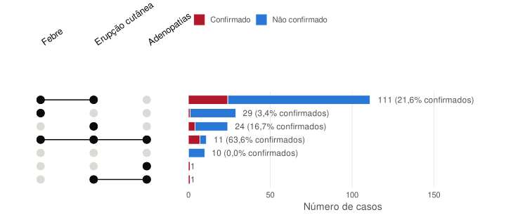
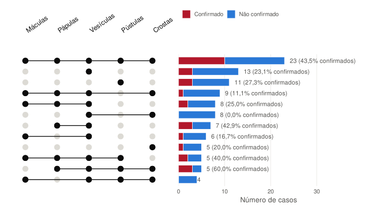

Análise dos sintomas
Dados da SE45-2026, atualizados em 6 nov. 2026
Esta página compara os sinais clínicos dos 43 casos confirmados e dos 164 casos suspeitos não confirmados (RT-PCR negativa). Os 2 casos à espera de resultado são excluídos. Uma resposta «sem informação» nunca é contada como «não»: o caso é retirado do cálculo para esse sintoma.
Frequência de cada sintoma
Leitura: cada linha liga a frequência de um sintoma nos não confirmados (azul) e nos confirmados (vermelho). Quanto maior a distância, melhor o sintoma distingue os casos confirmados. O odds ratio (OR) mede esta associação: um OR superior a 1 significa que o sintoma é mais frequente nos confirmados. Com 43 casos confirmados, os intervalos de confiança são largos e uma diferença não significativa (p ≥ 0,05) não prova a ausência de associação.
Combinações de sinais principais
Combinações de febre, erupção cutânea e adenopatias, nos casos em que os três sinais estão preenchidos.

Leitura: cada linha é uma combinação de sinais (pontos pretos ligados); a barra dá o número de casos que a apresentam, dividido em confirmados (vermelho) e não confirmados (azul). A percentagem de confirmados só é mostrada a partir de 5 casos. Análise sobre 187 casos (20 excluídos por falta de informação sobre um dos três sinais).
Combinações dos tipos de lesões
Estádios das lesões cutâneas (máculas, pápulas, vesículas, pústulas, crostas) nos casos com erupção.

Leitura: classicamente, as lesões de mpox evoluem ao mesmo ritmo, enquanto as da varicela coexistem em estádios diferentes; mas durante o surto mundial de clado IIb de 2022, foram frequentemente observadas lesões em estádios diferentes em casos de mpox. O estádio das lesões não permite, por si só, distinguir as duas doenças. Análise sobre 132 casos com erupção (29 excluídos por falta de informação sobre um dos tipos de lesão). São mostradas as 12 combinações mais frequentes.
Desempenho dos sinais para prever a confirmação
Leitura: a sensibilidade é a proporção de casos confirmados que apresentavam o sinal; a especificidade, a proporção de não confirmados que não o apresentavam. O valor preditivo positivo (VPP) é a probabilidade de um caso com o sinal ser confirmado, na população testada aqui: depende da taxa de positividade (20,8%) e não é transponível para outra população. Estes indicadores servem para avaliar a definição de caso.